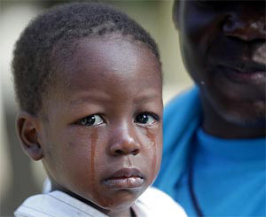
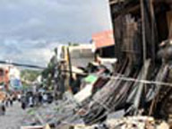
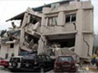
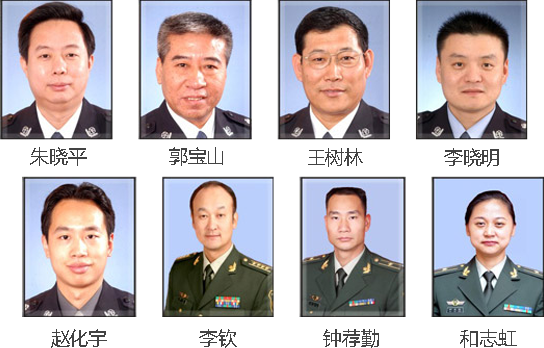

当地时间2010年1月12日下午，加勒比岛国海地附近海域发生里氏7.3级强烈地震，造成人员伤亡和重大财产损失……
 
海地位于西印度群岛海地岛西部，是东加勒比海岛国这是海地在200多年的时间里，遭受的最为强烈的地震。地震震中距首都太子港16公里，震源深度10公里。死亡人数估计达到14万人，约300万人将遭受地震的严重响。

根据《革命烈士褒扬条例》和《军人优抚优待条例》的有关规定: 民政部、公安部政治部分别批准在海地地震中不幸遇难的八位同志为烈士，并按规定予以抚恤.
海地地震遇难中国英烈遗体送别仪式1月20日上午9时在八宝山革命公墓礼堂举行 。 如果记忆能够凝固，那么，就请铭记住他们的名字 八位烈士中，郭宝山已是满头银发，也许海地是他退休前执行的不多的几次海外任务。李钦、李晓明已是多次出征。钟荐勤永别时，还未亲眼见过他刚刚210天大的女儿。更有瘦小纤弱的纳西族女警和志虹，她坚信“于大千世界，我也许只是一根羽毛，但我也要以羽毛的方式，承载和平的心愿”……